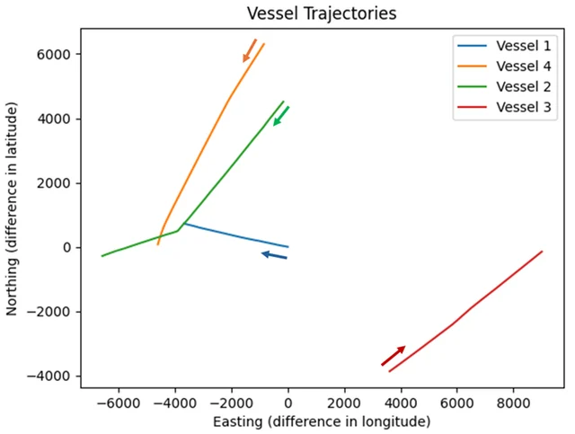
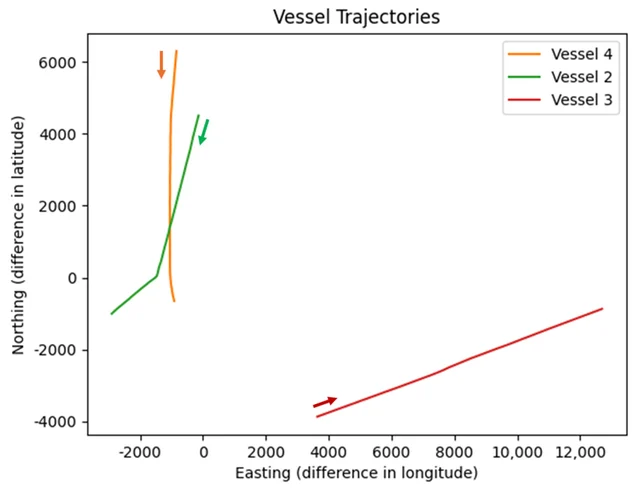
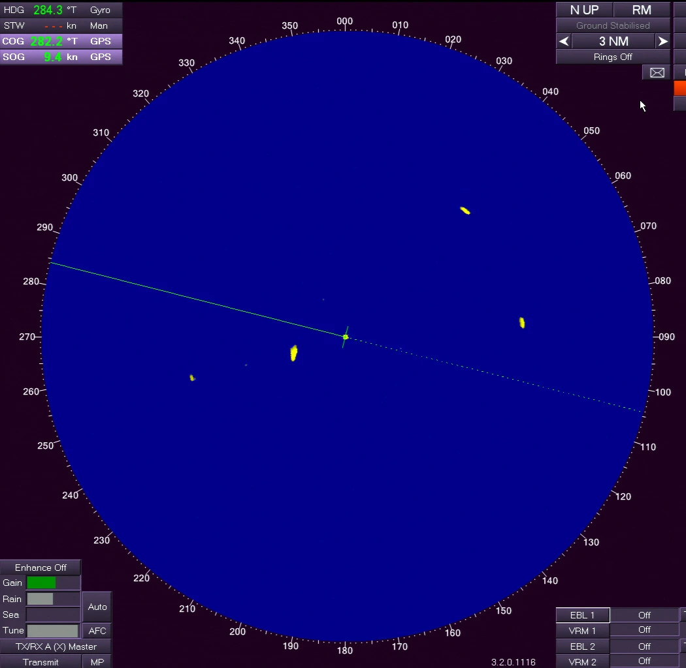
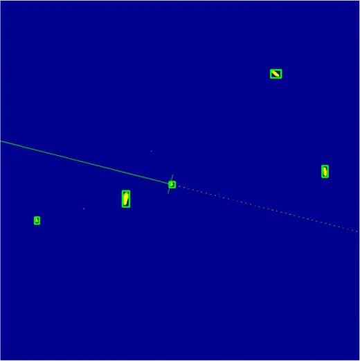
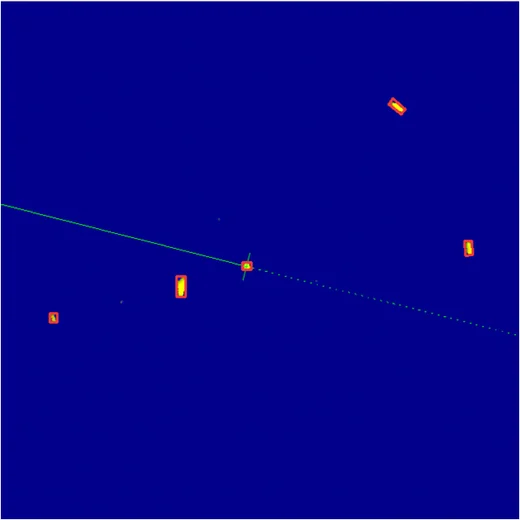
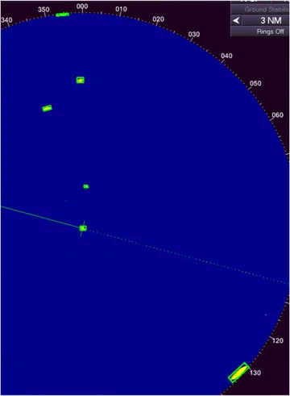
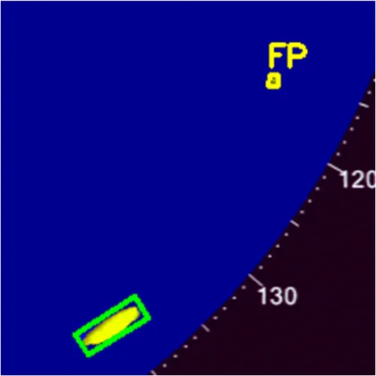

doi: 10.3390/s26030942 · Use ← → or Space to navigate, F for full screen
Summary
At a Glance
Small, distant vessels shrink to a few pixels when a full PPI frame is resized for a detector, and axis-aligned boxes fit tilted echoes poorly. This study tackles scale with tiled training and SAHI, and orientation with YOLOv11-OBB.
Tiled OBB mAP@0.50.989vs 0.955 resized
Full frames + SAHI> 0.95mAP@0.5, all tasks
Centroid error< 10 pxmean 5.06–6.75 px vs AIS
Speed with SAHI4–6 FPSRTX 3050 Laptop, ~6 MB models
Multi-format labels
A contour-based pipeline makes boxes, oriented boxes and masks from the radar echoes.
Scale-aware
640 px tiles for training, 640 px slices for inference keep small echoes at native resolution.
Orientation-aware
Oriented boxes follow each vessel's heading and give the lowest centroid error.
Two gaps. (1) Resolution mismatch: PPI frames are far larger than the 640 × 640 network input, so small targets vanish when resized. (2) Orientation: prior work uses axis-aligned boxes, which inflate around tilted, elongated echoes and wakes.
First unified study of tiled training + SAHI + oriented boxes on shipborne marine radar, validated against AIS.
Contributions: the pipeline, evidence that OBBs localize better, a semi-automatic multi-format annotation strategy, and a sub-10-pixel benchmark.
2 · Materials and Methods · Figs. 1–2
The DLR DAAN Dataset

Absolute AIS tracks (North-East)

Relative to Vessel 1 (own ship, radar)
Baltic Sea campaign: shipborne X-band navigation radar, non-coherent, no Doppler / MTI, 3 NM range, screen-grabbed at ~1 Hz.
760 full-resolution PPI frames (1050 × 1024), 13 minutes; four vessels, moving own ship, wake trails, fixed aids to navigation.
Synchronous AIS gives North-East positions for evaluation; crossings and overtaking make echo orientations vary.
2 · Materials and Methods · Algorithm 1
Semi-Automatic, Multi-Format Annotation

Fig. 3 · frame 760, North Up, 3 NM
Candidates: RGB → HSV, keep the yellow echo band
h ∈ [20, 40] ∧ s ∈ [100, 255] ∧ v ∈ [100, 255] (OpenCV scale)
then contours; drop areas under τ = 8 px.
Labels per contour: axis-aligned box (AABB); polygon mask via Douglas–Peucker, ε = 1% of the perimeter; minimum-area rotated rectangle (OBB, four corners).
Human check: ~15% of frames corrected once, offline: split merged vessels, join fragments, remove aids to navigation.
Single class "target"; temporal 80 / 20 train / test split so consecutive frames of one track do not leak across sets.
2 · Materials and Methods · Interactive
Annotation Lab: Algorithm 1 in Your Browser
View
Min area τ
HSV mask, 8-connected contours, AABB and minimum-area rectangle (rotating over hull edges), computed live on the full 1050 × 1024 frame. The human correction step is not included.
2 · Materials and Methods · Interactive
Why Oriented Boxes? Tilt an Echo
Heading
Elongation
axis-aligned boxoriented box
An idealized elliptical echo. The oriented box always covers the same share (π/4 ≈ 79%); the axis-aligned box swells as the vessel turns toward 45°, pulling in clutter, wake and neighbouring echoes.
Keeptiles holding a polygon centroid; re-normalize labels
→
TrainYOLOv11n detect / OBB / seg, COCO-pretrained
→
SliceSAHI: 640 px slices, 20% overlap, conf 0.5
→
Mergeclass-agnostic NMS, match 0.5
Full-image set760images · 4,457 instances
Tiled set3,040images · 11,893 instances
Framework
Ultralytics 8.3.235, PyTorch 2.7.1
GPU
RTX 3050 Laptop, 6 GB
Epochs / batch
50 / 16, AdamW (auto)
LR
0.01, cosine
Loss gains
box 7.5, cls 0.5, dfl 1.5
3 · Results · Table 1
Choosing a Lightweight Backbone (Tiled Training)
Model
Params (M)
GFLOPs
mAP@0.5
mAP@0.5:0.95
Inference (ms)
YOLOv5n
2.5
7.1
0.981
0.787
2.7
YOLOv8n
3.0
8.1
0.987
0.797
2.7
YOLO11n
2.6
6.3
0.984
0.816
2.9
YOLO26n
2.4
5.2
0.987
0.807
2.8
All four exceed 0.98 mAP@0.5. YOLO11n has the best mAP@0.5:0.95 (0.816), the stricter box-quality test that matters for small, oriented targets, so it is used for detect, OBB and segment in the rest of the study. YOLO26n is the lightest.
Click a header to sort.
3 · Results · Table 2
Resized vs Tiled Training
Metricresized to 640tiled
Tiling helps every task. Tiled YOLOv11-OBB is best: 0.989 mAP@0.5 and 0.882 mAP@0.5:0.95. Resizing loses detail of small echoes; orientation-aware learning gives the tightest boxes.
3 · Results · Tables 3–4
SAHI Settings: Overlap and Slice Size
VaryMetric
Tiled YOLOv11-detect on full frames. Smaller slices sharpen localization up to 320 px (mAP@0.75 0.381 → 0.486) and decline at 240 px; more overlap gives a small, steady gain. The right chart counts slices per frame (computed for a 1050 × 1024 frame): halving the slice size roughly quadruples the work.
3 · Results · Tables 5–6
Detect, OBB and Segment after SAHI
Model
mAP@0.5
@0.5:0.95
@0.75
YOLOv11-detect
0.9623
0.4877
0.3811
YOLOv11-obb
0.9539
0.3743
0.4281
YOLOv11-seg
0.9476
0.4937
0.4411
All three find the targets (mAP@0.5 > 0.94). At the strict IoU 0.75, detect drops to 0.381 while OBB and segment hold 0.428 and 0.441: their boxes and masks fit tighter.
false positivesfalse negatives
Precision 0.929 / 0.912 / 0.873, recall 0.958 / 0.955 / 0.955. Extra OBB detections are filtered against AIS in the localization analysis.
3 · Results · Table 7
Centroid Localization Against AIS
StatisticdetectOBBsegment
Tiled YOLOv11 + SAHI, matched detections of Vessels 2 and 4 (Vessel 3 is seen only intermittently). Every model stays below 10 px on average; OBB has the lowest mean and median error for both vessels (6.30 / 6.00 px and 5.06 / 5.10 px).
3 · Results · Fig. 4
Ground Truth vs Detect, OBB and Segment

Ground truth

Tiled models with SAHI (640 px slices, 20% overlap), confidence 0.5; a frame with several small, distant targets, all detected.
3 · Results · Fig. 5
True Positives, False Positives, Misses

true positivefalse positivefalse negative
Frame 069 of the test set, cropped to the upper half of the display.
3 · Results · Fig. 6
Where the Pipeline Still Fails

Most remaining errors come from the signal (low SNR, sea state), the geometry (manoeuvres, merging) or the slicing itself, which points to clutter suppression, adaptive slicing and multi-sensor fusion as next steps.
4 · Discussion · Section 3.5
Efficiency and Discussion
Model size5.5–6.0 MBdetect · OBB · seg
Peak memory< 4.2 GBall configurations
Full image18–22 FPS1050 × 1024 frames
Tiled OBB + SAHI4–6 FPS3–4× slower, more precise
Two problems, one pipeline
Tiling and SAHI remove the resolution mismatch; the OBB head adds boxes aligned with each vessel's extent and heading.
Speed is adequate
4–6 FPS suits collision avoidance and AIS-linked tracking at typical vessel speeds, where precise boxes matter more than frame rate.
Masks have uses too
Segmentation helps with wake suppression and separating overlapping echoes.
Limits
One radar dataset and display; fixed HSV thresholds for labelling; no sea-state labels yet.
5 · Conclusion
Conclusion and Future Work
Tiled training + SAHI + YOLOv11-OBB detects vessels in real X-band PPI images with mAP@0.5 > 0.95 and sub-10-pixel centroid error.
Tiling beats resizing for every task; tiled OBB reaches 0.989 mAP@0.5 and 0.882 mAP@0.5:0.95.
Oriented boxes give the tightest fits and the lowest centroid error against AIS.
~6 MB models at 4–6 FPS: practical on edge hardware for small and medium vessels.
Next steps
Faster pipeline: pruning, lighter backbones
Sea-state labels to study error versus wave height and clutter
Cross-dataset evaluation as more public marine radar data appear
5 · Conclusion
Check Questions
Why do small, distant vessels suffer most when a 1050 × 1024 frame is resized to 640 × 640?
At what heading does an axis-aligned box fit an elongated echo worst, and why?
Why can the OBB model have more false positives than detect yet a lower centroid error?
Halving the SAHI slice size from 640 px to 320 px: what happens to accuracy and to cost?
Why is the train / test split temporal rather than random?
Show answers
The resize shrinks every echo by about 0.6×; a few-pixel target can drop below what the feature maps resolve. Tiles keep the native pixels.
Near 45°: the box must cover both the length and the width projections, so it includes the most empty space and clutter.
Extra detections are filtered against AIS; for the matched vessels, the oriented box follows the hull, so its centre sits closer to the true position.
mAP@0.75 rises (0.381 → 0.486), but the number of slices roughly quadruples, so inference becomes slower.
Consecutive frames of one track are nearly identical; a random split would put near-duplicates in both sets.
References
Selected References
F. C. Akyon, S. O. Altınuç, A. Temizel, "Slicing aided hyper inference and fine-tuning for small object detection," IEEE ICIP, pp. 966–970, 2022.
J. S. Fowdur, M. Baum, F. Heymann, "Real-world marine radar datasets for evaluating target tracking methods," Sensors, vol. 21, 4641, 2021; data: doi:10.26090/rwmr.
X. Chen et al., "Multi-Dimensional Automatic Detection of Scanning Radar Images of Marine Targets Based on Radar PPInet," Remote Sensing, vol. 13, 3856, 2021.
G. Jocher, J. Qiu, Ultralytics YOLO11 (2024) and YOLO26 (2026), github.com/ultralytics/ultralytics.
See the full article for the complete reference list. Figures are reproduced from the article (CC BY 4.0); some are cropped or stacked for interaction.
Thank You
High-Precision Marine Radar Object Detection Using Tiled Training and SAHI Enhanced YOLOv11-OBB
How to cite: Külcü, S. (2026). High-Precision Marine Radar Object Detection Using Tiled Training and SAHI Enhanced YOLOv11-OBB. Sensors, 26(3), 942. doi:10.3390/s26030942